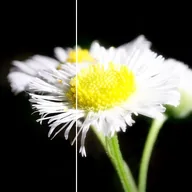

Cahaya Lembut

Menindih salinan gambar yang lembut dan kabur untuk cahaya bagaikan mimpi, kebanyakannya daripada sorotan.
Cahaya Lembut menambahkan salinan kabur bagi gambar di atas dirinya untuk rupa yang bagaikan mimpi dan berjerebu, kebanyakannya daripada bahagian sorotan. Saiz ialah tahap kelembutan jerebu, Sorotan ialah berapa banyak ia datang daripada bahagian terang, dan Warna memberi warna padanya. Kelegapan mencapurkannya dengan yang asal.
Tetapan
| Tetapan | Jenis | Julat | Lalai |
|---|---|---|---|
| Saiz | Nombor | 0 hingga 300 | 20 |
| Kecerahan | Nombor | 0 hingga 3 | 1 |
| Kontras | Nombor | -1 hingga 1 | 0.2 |
| Sorotan | Nombor | 0 hingga 1 | 0.5 |
| Warna | Warna | – | #FF5566 |
| Campuran | Nombor | 0% hingga 100% | 25% |
| Kelegapan | Nombor | 0 hingga 1 | 1 |